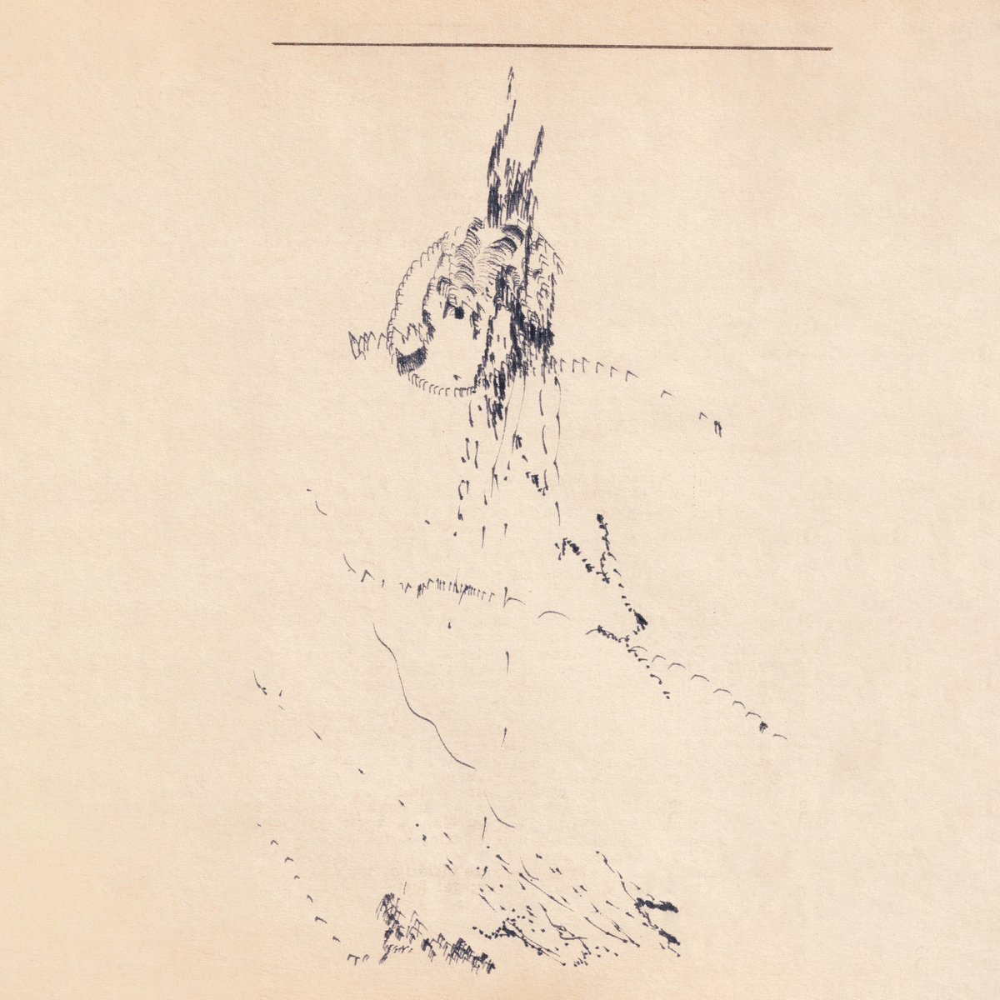
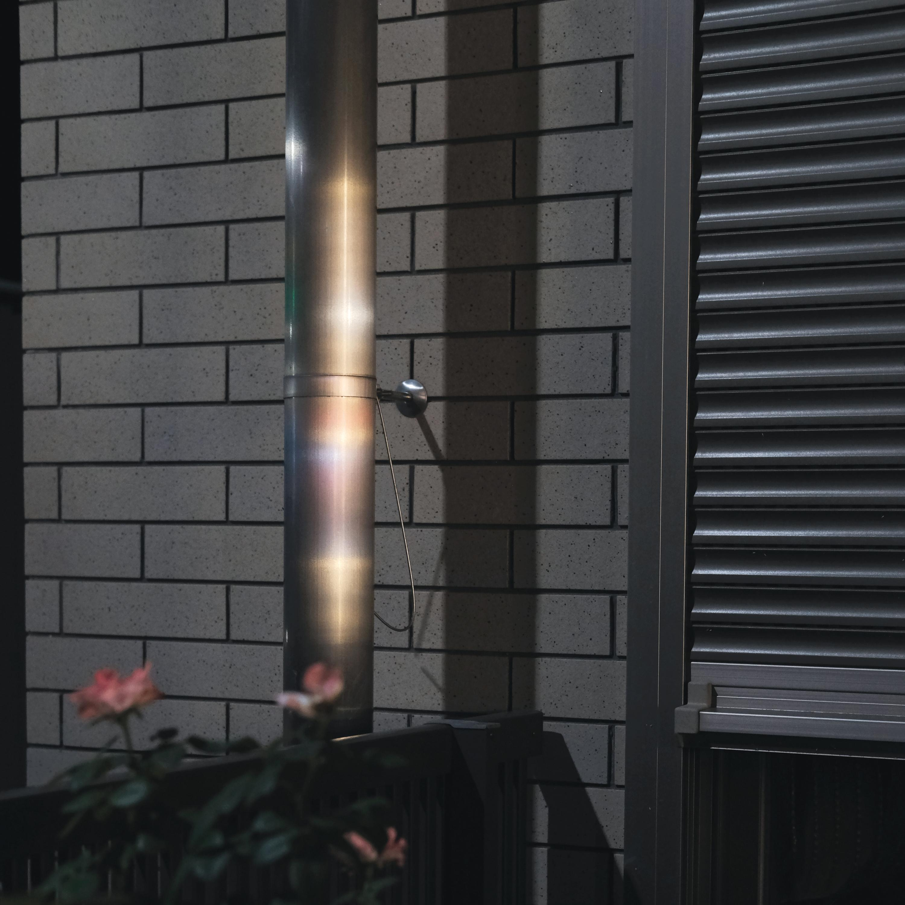

Music
Behind The Great Curve
LP incl. booklet / CD / Digital
blickwinkel 24 / 10 April 2026
Shows
- 25/11/26 cUNST Brussel
- 21/11/26 Het Bos Antwerpen, w/ Simon B., Céline Meulemans
- 23/10/26 Grambacht Mechelen, w/ Abner B, A Tribe Called Noiz (JP)
- 11/10/26 TroikaAdia Vanheerentals, Thijs Troch & Lennert Jacobs Django, Gent
- 03/09/26 Meakusma Festival Eupen
- 29/08/26 Rubirock Rubigny (FR)
- 03/08/26 Theater Aan Zee Oostende (Jacobs/Zeebroek/Burton Trio)
- 26/07/26 Beuland house show Gent w/ Field Commander Ali, Jordan Ireland
- 11/06/26 Palmarium Gent w/ Suzan Peeters
- 24/05/26 SUBstore Tokyo (JP) w/ Hiroki Sugi, DJ: Kumari, Radio Jakarta
- 23/05/26 Kankyō Records at Shibuya PARCO Tokyo (JP)
- 22/05/26 ESŐ Kanazawa (JP) w/ Yukihito Kono, DJ: K3N, k*****, Yushin, Yuzuru
- 18/05/26 Space Eauuu Kobe (JP) w/ Sawako & Sumitomo Nomura
- 17/05/26 Tobira Records Kasai City (JP) w/ Dilian, Kim David Bots & Lyckle De Jong, Kuthi Jin, Oldmold, ...
- 15/05/26 Give me little more. Matsumoto (JP) w/ daborabo, 13un, DJ: Sakura Fantasma
- 02/04/26 Blikfabriek Hoboken w/ Hiele
- 29/03/26 AB Salon Brussel
Contact
Info and bookings: lennertjacobs@gmail.com